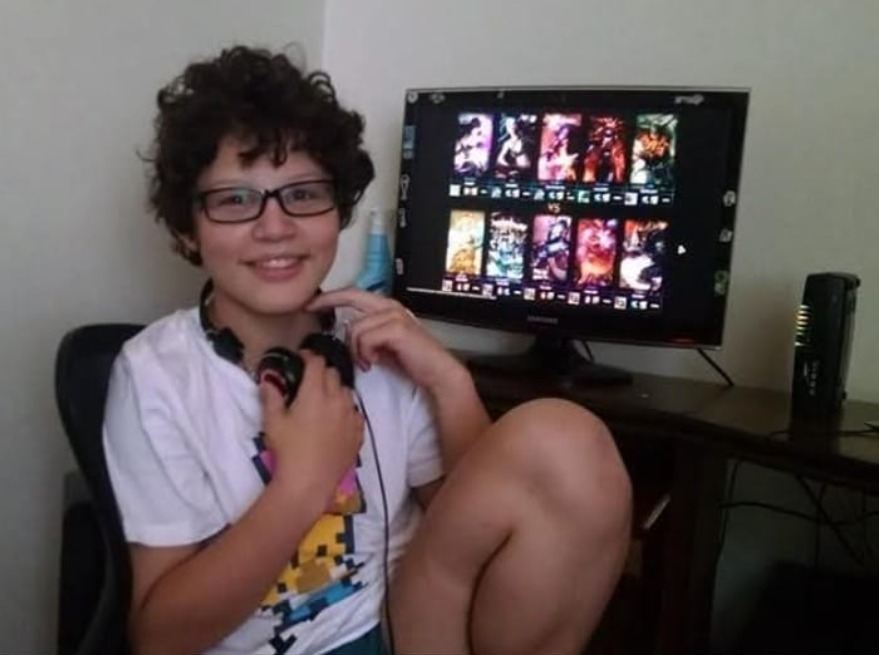

Meu Perfil
Sair
MINHA HISTÓRIA PESSOAL COM O DESENVOLVIMENTO DE JOGOS
Meu nome é Mauro Junior, tenho 23 anos no momento de criação deste site e tenho contato com
videogames desde sempre.
A NO MORE GAMES é a primeira tentativa de um aluno de Análise e Desenvolvimento de Sistemas em traduzir para artefatos digitais sua opinião, interesse e carinho acerca do tema de desenvolvimento de jogos.
Minha primeira memória afetiva com videogames acontece cedo, na segunda casa em que me lembro de ter morado. Nela, eu e meu irmão ganhamos um Playstation 1, nosso primeiro console. Lembro de passar as noites antes da escolinha jogando Yu-Gi-Oh Forbidden Memories com minha mãe.
Minha infância, então, acabou sempre girando em torno de videogames, arte e tecnologia. Não muito depois do PS1, ganhei meu PS2; ao mesmo tempo em que explorava cada vez mais meu gosto por desenhar e descobrir as funcionalidades do velho notebook de trabalho do meu pai.
O próximo turning point da minha vida foi bem perto do fim da infância, quando ganhei meu computador. Esse evento acabou por exacerbar todos os pilares da minha personalidade: eu tinha acesso a mais jogos, que me deixavam cada vez mais inspirado a fazer arte, que por sua vez resultava em ainda mais vontade de jogar e mais estudo para entender o funcionamento do computador e dos jogos.
Com todas as peças em seus lugares, não demorou muito para eu me tocar que todo jogo precisava ser desenvolvido. Essa descoberta se deu com um pequeno programa de computador chamado RPG Maker. A partir daí, se inicia a jornada que perdura até hoje: preciso aprender a fazer sprites, depois a programar a movimentação deles, e talvez um script de movimento e então... mas aí... e também, depois... !!!
Estrago feito. O que já era um interesse se torna uma paixão. Sou muito grato por esse momento, pois hoje percebo o quanto o interesse não só por jogar, mas também por desenvolver, me ajudou a chegar onde estou hoje: a vontade constante de iterar e testar scripts, engines, ideias e programas são combustíveis infinitos na busca por conhecimento.
Hoje, carrego comigo um apreço indescritível pelo mundo dos jogos. Considero essa, a oitava arte, a mais completa e mais tocante de todas. Esse site nasce, então, com o propósito de expor ao mundo a minha visão sobre videogames e o bem que eles podem trazer a uma pessoa que busca se desenvolver.
A NO MORE GAMES é a primeira tentativa de um aluno de Análise e Desenvolvimento de Sistemas em traduzir para artefatos digitais sua opinião, interesse e carinho acerca do tema de desenvolvimento de jogos.
Minha primeira memória afetiva com videogames acontece cedo, na segunda casa em que me lembro de ter morado. Nela, eu e meu irmão ganhamos um Playstation 1, nosso primeiro console. Lembro de passar as noites antes da escolinha jogando Yu-Gi-Oh Forbidden Memories com minha mãe.
Minha infância, então, acabou sempre girando em torno de videogames, arte e tecnologia. Não muito depois do PS1, ganhei meu PS2; ao mesmo tempo em que explorava cada vez mais meu gosto por desenhar e descobrir as funcionalidades do velho notebook de trabalho do meu pai.
O próximo turning point da minha vida foi bem perto do fim da infância, quando ganhei meu computador. Esse evento acabou por exacerbar todos os pilares da minha personalidade: eu tinha acesso a mais jogos, que me deixavam cada vez mais inspirado a fazer arte, que por sua vez resultava em ainda mais vontade de jogar e mais estudo para entender o funcionamento do computador e dos jogos.
Com todas as peças em seus lugares, não demorou muito para eu me tocar que todo jogo precisava ser desenvolvido. Essa descoberta se deu com um pequeno programa de computador chamado RPG Maker. A partir daí, se inicia a jornada que perdura até hoje: preciso aprender a fazer sprites, depois a programar a movimentação deles, e talvez um script de movimento e então... mas aí... e também, depois... !!!
Estrago feito. O que já era um interesse se torna uma paixão. Sou muito grato por esse momento, pois hoje percebo o quanto o interesse não só por jogar, mas também por desenvolver, me ajudou a chegar onde estou hoje: a vontade constante de iterar e testar scripts, engines, ideias e programas são combustíveis infinitos na busca por conhecimento.
Hoje, carrego comigo um apreço indescritível pelo mundo dos jogos. Considero essa, a oitava arte, a mais completa e mais tocante de todas. Esse site nasce, então, com o propósito de expor ao mundo a minha visão sobre videogames e o bem que eles podem trazer a uma pessoa que busca se desenvolver.

Eu, 12 anos atrás